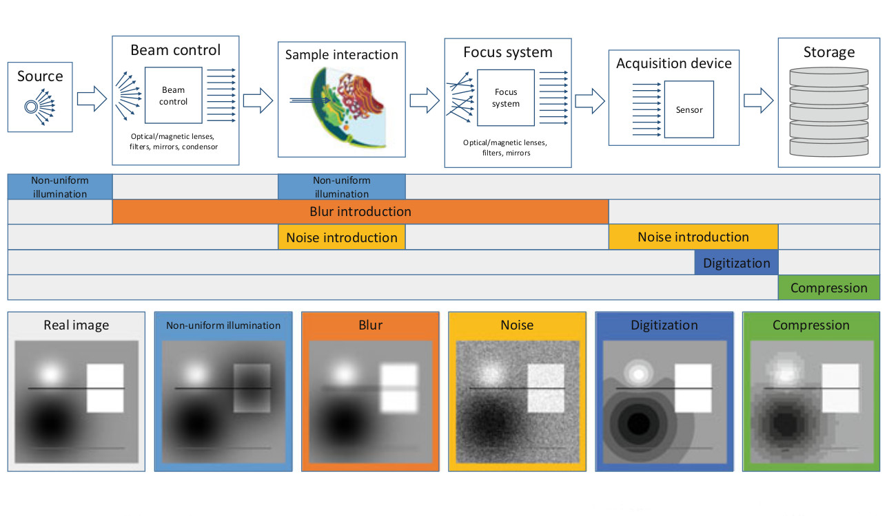
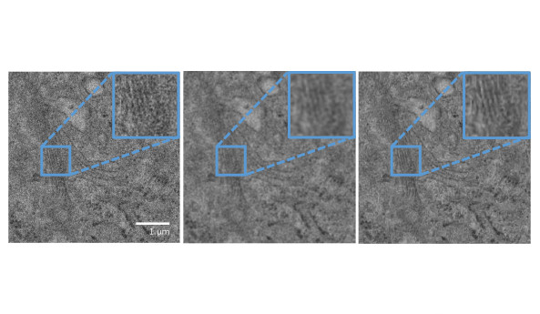
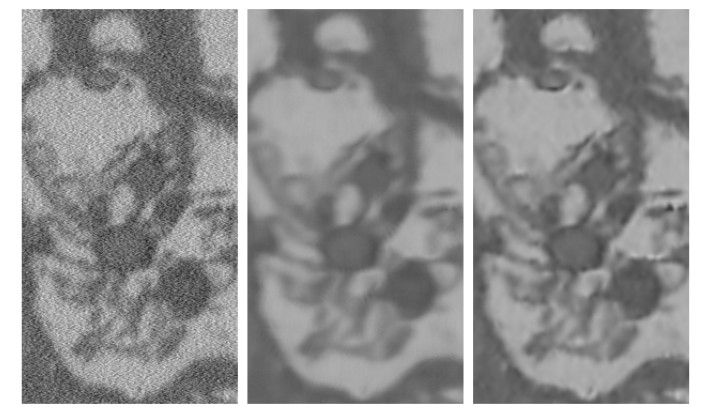
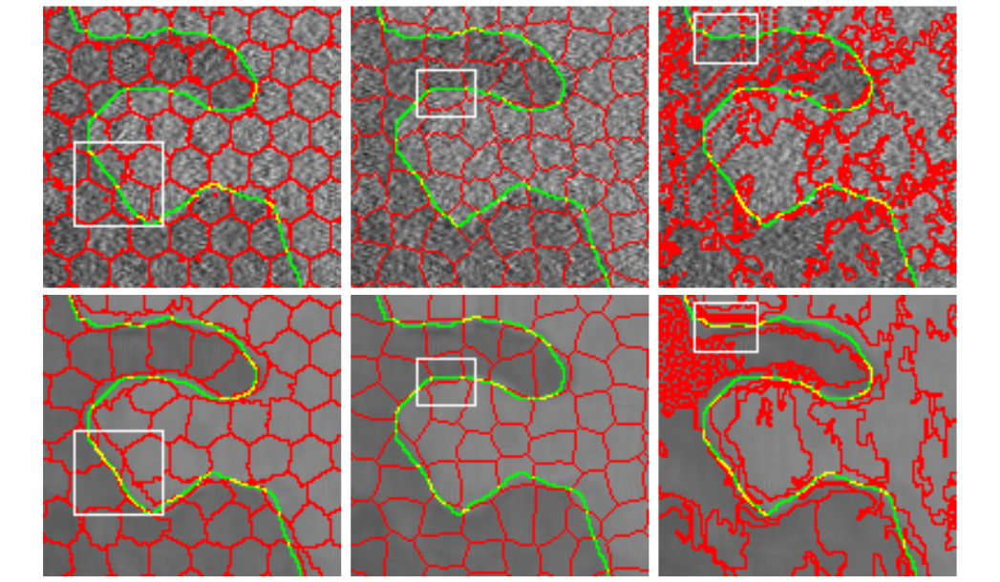
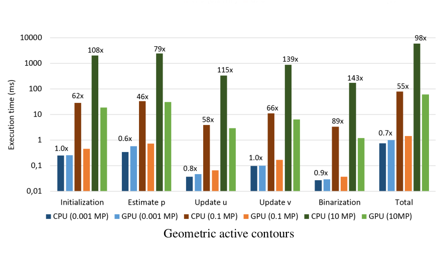
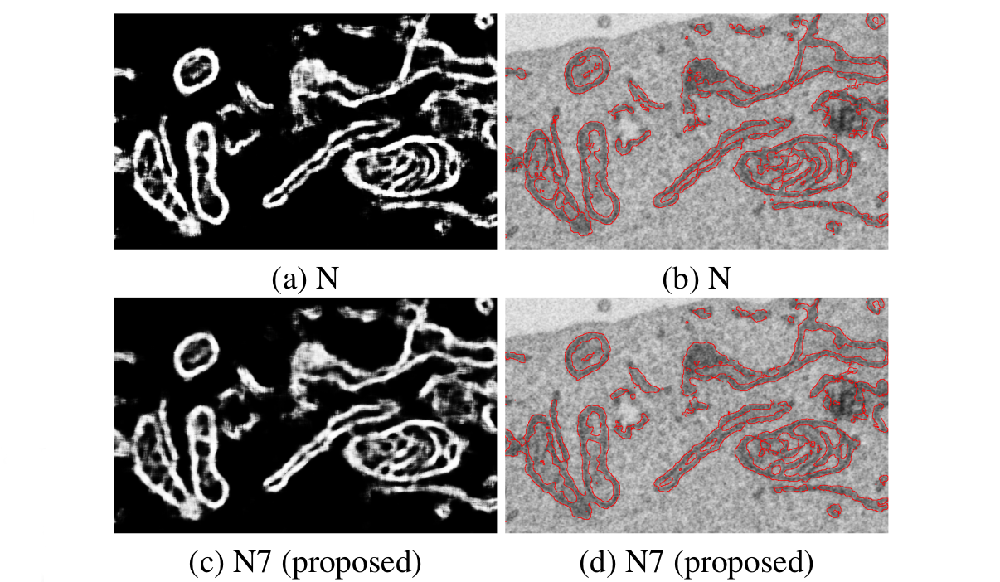
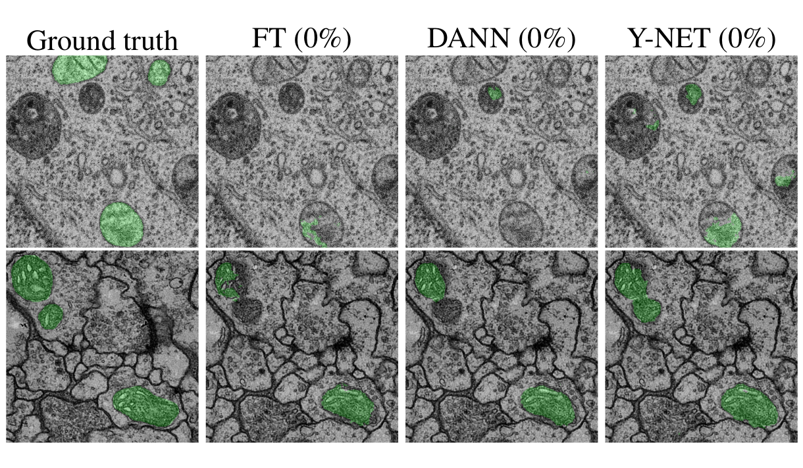

Image quality enhancement
Noise and blur are significant artifacts in 3D EM. I am working on denoising and deconvolution algorithms in order to reduce their impact on post-processing image analysis.
This is mostly performed within a probabilistic, regularized framework.

Image degradation in microscopic images: avoidance, artifacts and solutions
This work provides a detailed explanation how imaging artifacts such as noise and blur are introduced in microscopy data.
We provide solutions to avoid these artifacts during the sample preparation and acquisition stage, and post-processing algorithms that can mitigate them.
Paper

An Overview of State-of-the-art Image Restoration in Electron Microscopy
In this work, we particularly focus on post-processing solutions for electron microscopy (EM)>
We describe the state-of-the-art in image denoising and deconvolution and evaluate their performance on EM data both qualitatively and quantitatively.
Paper

Bayesian Deconvolution of Scanning Electron Microscopy Images Using Point-spread Function Estimation and Non-local Regularization
Here, we propose an automatic workflow to estimate the blur characteristics in EM imaging.
Secondly, we introduce a novel Bayesian deconvolution algorithm and show that it significantly benefits image segmentation.
Paper
Code
Image segmentation
Bioimage analysis relies on accurate 3D reconstructions of structures such as mitochondria, endoplasmic reticulum, etc.
Recent techniques are largely based on supervised machine learning approaches which is too time-consuming in many cases.
I am developing algorithms to reduce the amount of supervision in state-of-the-art learning-based segmentation methods.

Superpixel quality in microscopy images: the impact of noise & denoising
Many segmentation algorithms are based on superpixel pre-segmentation for acceleration purposes.
In this paper, we introduce denoising methods as a pre-processing step for superpixel extraction to improve boundary preservation.
Paper

Decreasing Time Consumption of Microscopy Image Segmentation through Parallel Processing on the GPU
In this paper, we introduce the use of massive parallel computing on the GPU using Quasar.
We show that segmentation algorithms such as active contours can be accelerated by a factor of up to 100 using this compute hardware.
Paper

Convolutional Neural Network Pruning to Accelerate Membrane Segmentation in Electron Microscopy
We introduce a pruning technique that reduces the width of a pixel classification neural network in this paper.
The pruning selection criterion is based on loss minimization and accelerates the networks by a factor of 2 without significantly affecting segmentation quality.
Paper
Code

Domain Adaptive Segmentation in Volume Electron Microscopy Imaging
In this work, we extend existing domain adaptation techniques for classification to encoder-decoder segmentation networks.
Additionally, we introduce a more ergonomical domain adaptation technique for segmentation that achieves equal to better performance compared to the classification extensions.
Paper
Code